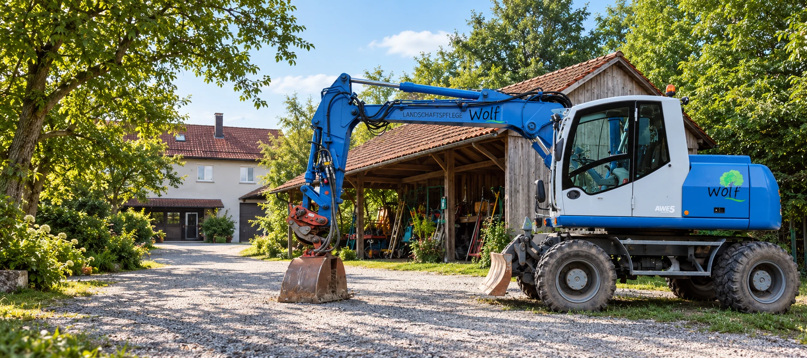
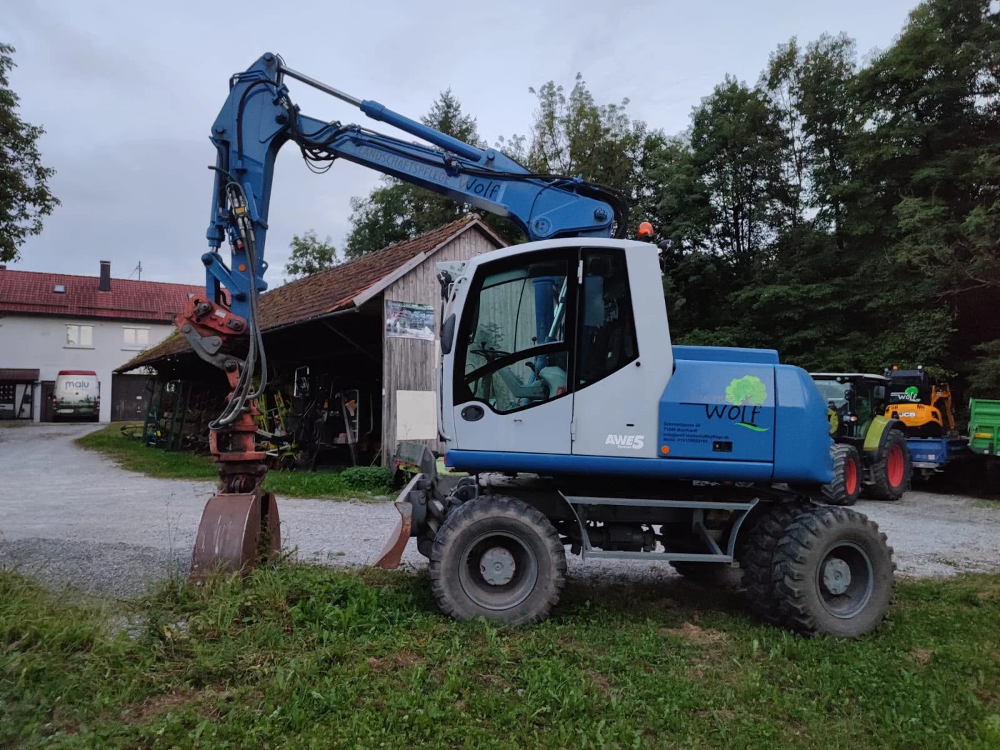

Kurz kennenlernen
Sie erzählen uns von Ihrem Vorhaben, dem Standort und Ihren Wünschen.

Über uns
Seit 2009 für Sie im Einsatz – WOLF Dienstleistungen aus Murrhardt.
Starke Leistungen. Saubere Ergebnisse.
Mein Werdegang

Mein beruflicher Werdegang begann bereits in jungen Jahren. Am 01.10.2009 gründete ich im Alter von nur 19 Jahren mein eigenes Unternehmen und legte damit den Grundstein für meine heutige Selbstständigkeit. Im selben Jahr schloss ich meine Ausbildung zum Gärtner der Fachrichtung Garten- und Landschaftsbau erfolgreich ab.
Im Anschluss daran konnte ich bei verschiedenen Unternehmen umfassende praktische Erfahrungen in unterschiedlichen Bereichen des Baugewerbes sammeln.
Bei der Firma Lukas Gläser war ich im Straßen- und Tiefbau sowie im Leitungsbau tätig. Weitere wertvolle Kenntnisse im Hoch- und Tiefbau sowie im Betonbau konnte ich bei der Firma Weber Massivhaus erwerben.
Bereits während dieser Zeit führte ich mein Unternehmen zunächst als Kleingewerbe. Seit 2014 bin ich hauptberuflich selbstständig und widme mich meinen Aufgaben mit voller Hingabe, großem Engagement und fachlichem Know-how.
Meine Leistungen
Durch meine langjährige Berufserfahrung biete ich ein vielseitiges Leistungsspektrum, das weit über den klassischen Garten- und Landschaftsbau hinausgeht. Zu meinen Tätigkeitsbereichen zählen:
Mein Anspruch
Mein Anspruch ist es, jedes Projekt fachgerecht, zuverlässig und mit vollem Einsatz umzusetzen. Dabei verbinde ich meine langjährige Erfahrung aus verschiedenen Bereichen des Baugewerbes mit einer praxisorientierten Arbeitsweise und dem Blick fürs Wesentliche.
Ob kleinere Arbeiten im Garten- und Landschaftsbau oder anspruchsvolle Projekte im Tiefbau – ich stehe für persönliche Betreuung, saubere Arbeit und eine zuverlässige Umsetzung von der Planung bis zur Fertigstellung.
Qualität, Zuverlässigkeit und Kundenzufriedenheit stehen für mich an erster Stelle. Seit der Gründung meines Unternehmens im Jahr 2009 verfolge ich das Ziel, meine Kunden mit handwerklicher Kompetenz, persönlichem Einsatz und überzeugenden Ergebnissen zufriedenzustellen.
Alles aus einer Hand – kompetent, zuverlässig und mit Leidenschaft fürs Handwerk.
So arbeiten wir
Sie erzählen uns von Ihrem Vorhaben, dem Standort und Ihren Wünschen.
Wir klären die Anforderungen, besichtigen bei Bedarf vor Ort und erstellen ein individuelles Angebot.
Leistungsumfang und Termin stimmen wir persönlich mit Ihnen ab. Dann kann es losgehen.
Erzählen Sie uns von Ihrem Vorhaben. Wir denken mit und beraten Sie persönlich.